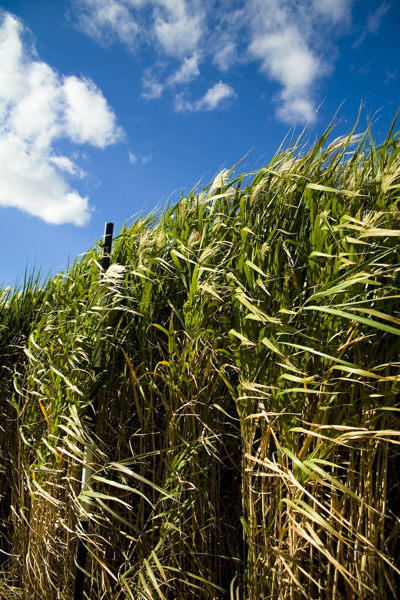
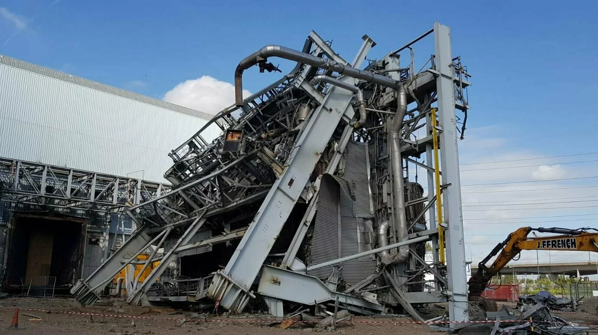

1
Mycelium does not treat asbestos or concrete.
Mycelium is reserved for organic pollutants such as hydrocarbons, PAH, phenols and PCB. Asbestos and mineral hazards move to engineering control.
Soil remediation as the first architecture
Barking Reach is no longer a power station and not yet a market. The design begins by reading ground health: what can be biologically treated, what must be physically controlled, and what can only become public after remediation unlocks it.
Critical Correction
The framework gets stronger by drawing hard boundaries. This is the part worth making very visible in crit: each technique has a precise chemical territory, and the site becomes a choreography of different speeds.
Mycelium is reserved for organic pollutants such as hydrocarbons, PAH, phenols and PCB. Asbestos and mineral hazards move to engineering control.
Plants can immobilise, stabilise, extract slowly or alter migration pathways. The claim is management and risk reduction, not disappearance.
The same species can stabilise in high pollution, support long-term management in medium pollution, and only extract in lower-risk zones.
Three-Track Framework
The tracks are not aesthetic zones. They are chemical responsibilities: plants manage metals and water edges, mycelium incubates organic contamination, engineering handles hotspots that biology should not touch.

Phytostabilization, assisted stabilization, slow extraction, willow / poplar buffers and wet meadow filtration.

White-rot fungi such as Pleurotus use lignin-degrading enzymes to oxidise hydrocarbons and PAH under dark, moist covers.

Asbestos, cyanide, high metal hotspots and uncertain sources require capping, ISS, excavation, soil washing or monitored isolation.
Rule Engine
This is the table translated into a decision surface. It can later become the Cellular Automata rule set: family routes the cell; severity and confidence decide treatment, access and time.
Engineering Track
Biological systems should not be asked to solve asbestos, cyanide or high-risk unknown sources.
Keep hardstanding as a cap where possible, isolate hotspots, and let elevated routes pass over zones that are not yet unlocked.
Cell state remains locked until source-pathway-receptor risk is broken and monitoring confirms a lower exposure category.
Plant Gradient
This reframes the plant palette as a management gradient rather than a species catalogue. It also prevents the dangerous claim that planting automatically equals cleaning.
High contamination
High contamination zones use roots and cover to reduce dust, runoff and contact. The landscape is a controlled skin, not an edible or fully open park.
Unlock Sequence
This is the part that connects William’s “walk through the site” idea to design. The metaverse / video can reveal former buildings, soil sections and repair states as zones gradually become available.
X-ray former turbines, cooling tunnels, hardstanding and suspected industrial use polygons as a conceptual site model.
Asbestos, cyanide and uncertain source zones are capped, stabilised, washed or removed before any public claim is made.
Dark mycelium mats occupy hydrocarbon / PAH areas with moist timber substrates, covers and staged harvest.
Miscanthus, grass cover, willow buffers and pioneer planting turn exposure control into a long-term landscape system.
Low-risk and post-remediation areas become wetland, meadow, short-rotation coppice, civic routes and later building footprints.
Design Translation
For crit, this framework should not stay as an appendix table. It should become the logic behind a ground plan, a sectional sequence and a walk-through video.
Use confirmed / inferred line types. Former lubricating oil depot and motor works imply organic risk; turbine hardstanding and demolition residues imply capping and material control.
Light plant fields for metal management, dark mycelium covers for organic incubation, hard caps / fenced cuts for engineering control.
The path network is not just circulation. It records whether a zone is locked, visible, controlled, edge-open or fully public.
Building footprints should land on stable caps, retained slabs or verified low-risk ground, not on a top-down four-tower diagram.
Crit Traps
These are the lines that should remain visible in your working notes and diagrams. They make the project more credible, not weaker.
Plants and fungi have different chemical territories. Mixing them into one green cure-all will get attacked immediately.
Use extract, immobilise, stabilise, reduce bioavailability or change migration pathway.
Harvested biomass from contaminated soil needs testing, isolation, thermal treatment or specialist disposal.
Asbestos cement and mineral fibres are engineering-track hazards.
First year is establishment. Its value is long-term stabilization and biomass infrastructure.
Use CSM, confidence levels and confirmed / inferred drawing conventions until actual soil testing exists.